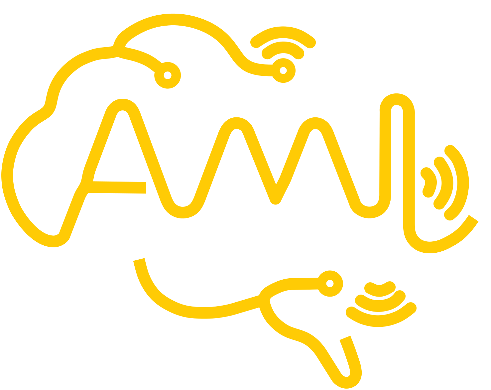
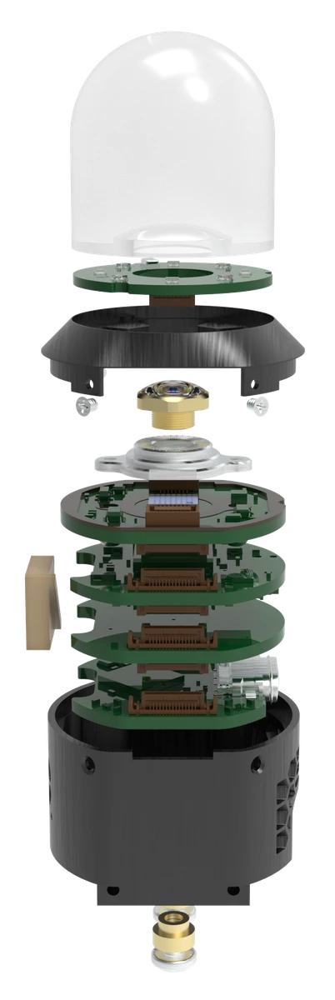
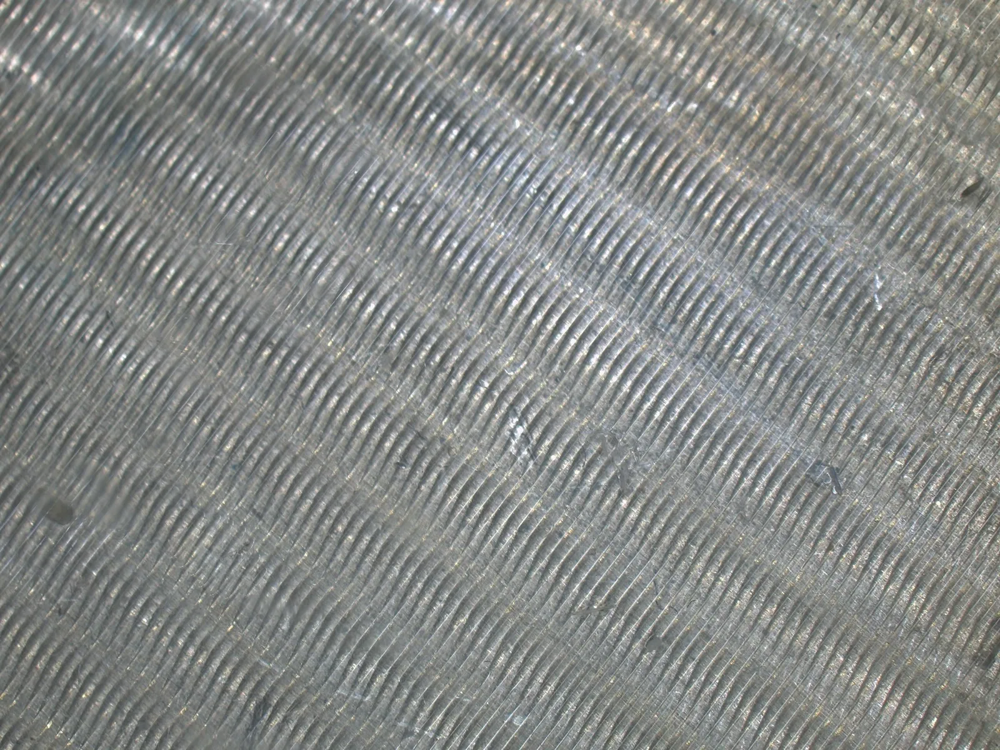
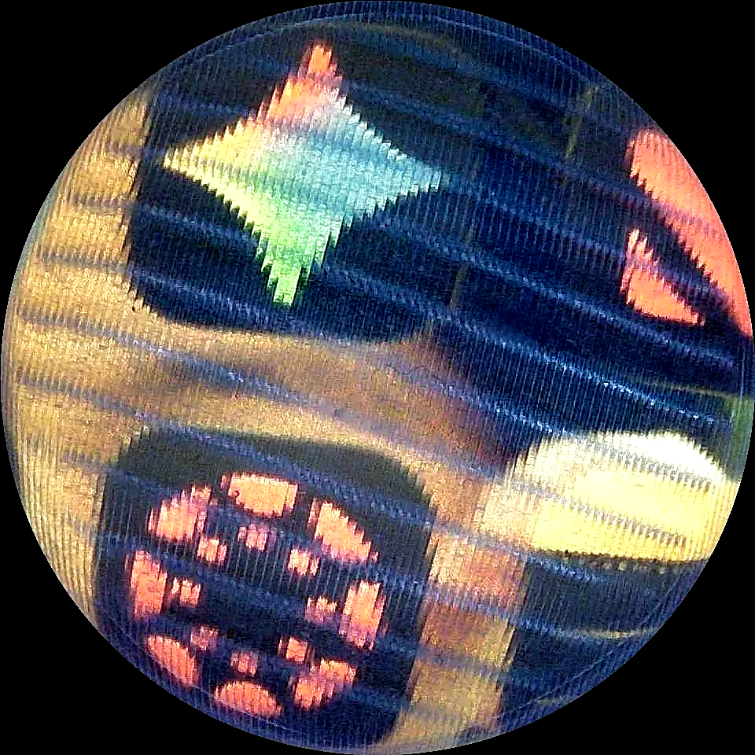
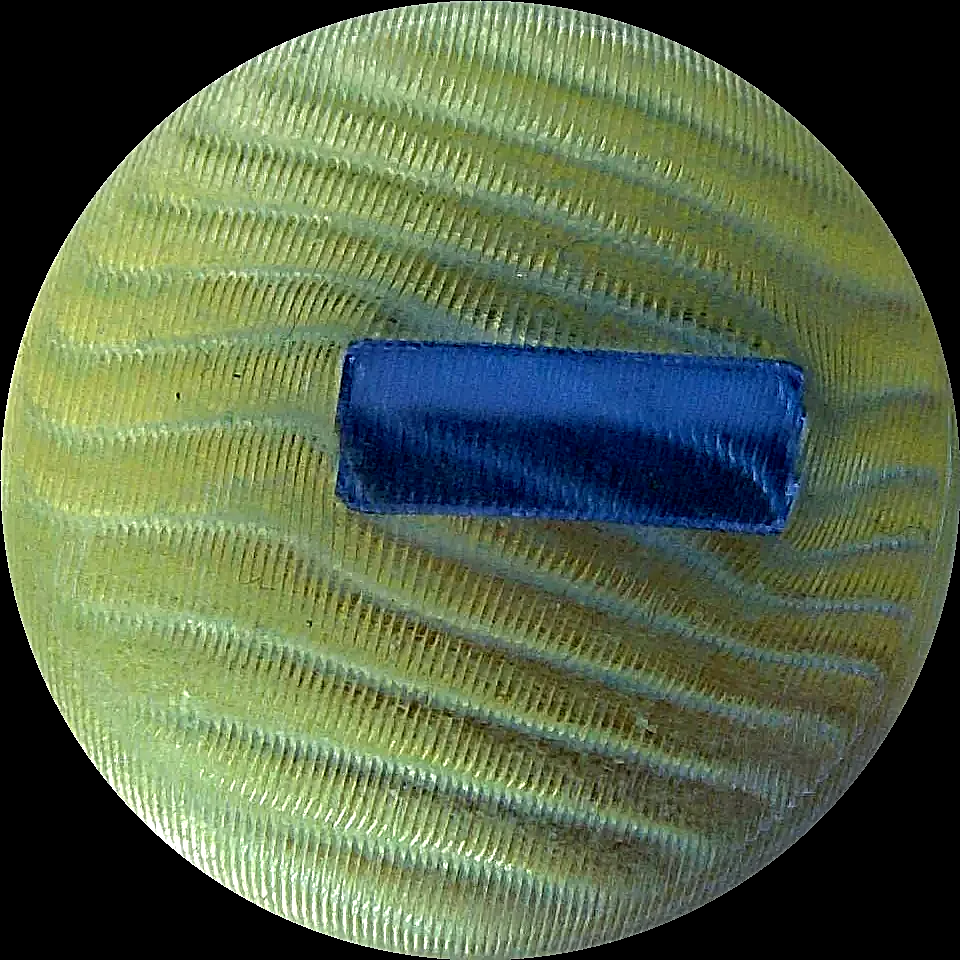
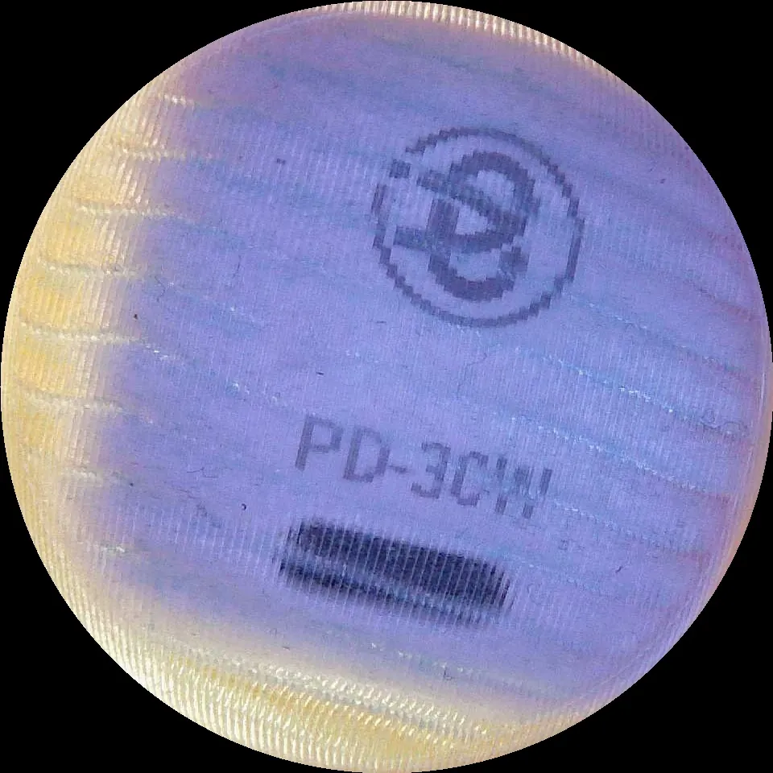
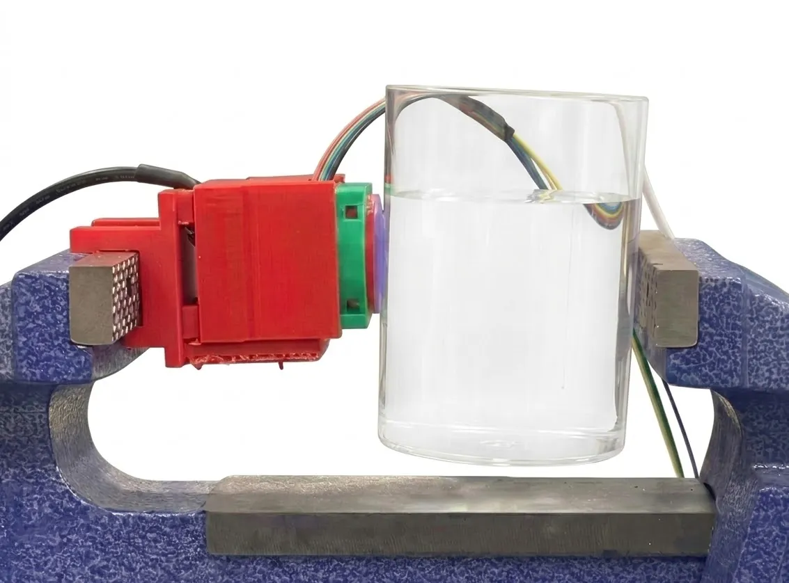

ACM MobiCom 2026 · Austin, TX
MoiréSkin
Ultra-Sensitive Sensor–Actuator
Visuo-Tactile Skin using Moiré Patterns
- Linzhen Zhu
- Liuxi Xing
- Runqiu Wang
- Ke Sun
Computer Science & EngineeringUniversity of Michigan

Ambient Intelligence LabAMI Lab
MoiréSkin on robot gripper
MoiréSkin sensor design
MoiréSkin
Why it matters
Are you afraid of interacting with a humanoid robot?
Sensitivityto handle fragile things
+
Complianceto grip them gently
Failure case
Video: ROBOTIS · youtube.com/watch?v=1-ymnFMMVgk
Existing solution
SoTA: structured-light visuo-tactile sensors.
- A robot gripper with visuo-tactile sensors
- GelSight
Video: GelSight · youtube.com/watch?v=wCZZnyo7k44
Visuo-tactile sensor
Tactile → visual: a camera reads touch.
- Imaging a pressed screw
- GelSight
Video: GelSight · youtube.com/watch?v=wCZZnyo7k44
How they work
Why a rigid base
Structured light on a rigid base.
The problem
A rigid base limits compliance and sensitivity.
Meta · Digit 360

Image: Meta AI · Digit 360
Failure case · illustration
Compliancea rigid surface cannot grip gentlylike gripping with a knuckle, not a fingertip
Sensitivityon a rigid base, the gel barely deforms under ultra-low force
Background
Our insight
The answer: moiré pattern.
Moiré fringes on one soft film.
A moiré metasurface amplifies touch.
Lens · 3 mm
Lower · fluorescent
Upper · clear
μmthe film barely bends
mmthe fringes move a lot
Scroll ↕ to bring them together
Scroll ↕ to deform more · hover to move the touch
Real sensor
Simulation
Real sensor · light touch
Hardware
Three modules in one cell.
Mount the cell on a robot arm.

Fine grating lines
5 mm
Our film under a microscope
Coverclear TPU
Upper grating330 μm
Substratesoft silicone
Lower gratingfluorescent
Air chamber
Pumpone controller
Camera1080p · 160°
LED ringfaces down · blue
Diffuse reflector
- 12× speed
- MoiréSkin
- Real sensor · camera view
Fabrication
Two gratings → one soft film.
- Fluorescent lower grating
- Clear upper grating
- One soft film
No cleanroom · reusable molds
Design
Clear fringes, clear skin, low cost.
Fluorescent grating
keeps high contrast



See through
sees before touch
<$2per cell
No cleanroom
≈ $50 for the whole system
How it works
Challenge 1Sensitivity vs spatial resolution.
A fingertip has both, at once.
One angle sets both.
Smaller angle · more gain · wider fringes
A balanced angle: 6.31°.
Our solution
Force
sensitivitythe lightest touch
a fingertip feels
Spatial
resolutionhow finely it tells
where the touch is
Videos: Nui Malama, cottonbro studio · Pexels
Scroll ↕ to change the angle · hover to press
Simulation
Real sensor
Real sensor · touch
Sensing
How we detect force + position.
Sensing
Millinewton precision.
Tiny force · 0–0.4 N · zero state
0mNnormal force
≈ a sticky note’s weight
0mmposition
≈ a hair’s width
Actuation
Why do we need actuation?
Actuation enables dexterity for even a toy arm.
- MoiréSkin
- Failure case · illustration
- MoiréSkin · sensing + actuation
Toy-grade, low-precision arm
- 1Grasp the cup
- 2Water pours in
- 3Feels the weight, inflates
- 4Without feedback, it would fall
- 5Holds steady, sets it down
How it works
Challenge 2Read the internal pressure for actuation.
Challenge 3Outside air pressure causes drift.
Fringe rotation angle → internal pressure.
Fringes turn without any force.
Pump until centre and rim line up.
- Chamber
- 0.0 hPa
- Centre turns
- 0.0°
Scroll ↕ to pump air
- Outside air
- 1013.2 hPa
- Centre turns
- 0.0°
- Rim turns
- 0.0°
- Centre vs rim
- 0.00°
- Pump
- Zero ✓
Simulation
Simulation
Real sensor
Real sensor · inflation
Real sensor · pumping
Real sensor · zeroed ✓
Sense + actuate
Case study: softness classification.
0%10-shot · 7 materials
92.7%5-shot
≈ soft tofu≈ skin
<
softer than
a marshmallow
Young’s modulus · 8.7–21.7 kPa
Real sensor
Sense + actuate
Case study: shear force sensing.
0gmean error · unseen session
4.75gRMSE
0–300mLwater poured in

Real setup
Sense + actuate
One pre-trained backbone, two new skills.
Data collection kit
Humans teach, robots learn.
Gripper after UMI · Chi et al., RSS 2024 · umi-gripper.github.io
UMI-style handheld gripper
UMI by
Senses tactile contactfrom fringe changes
Sees the berrythrough the skin
Takeaways
- Ultra-sensitive · 3.78 mN
- Compliant · grips fragile things gently
- Actuating · feels its own pressure
- See-through · sees before touch
Computer Science & EngineeringUniversity of Michigan
Ambient Intelligence LabAMI Lab
ACM MobiCom 2026 · Austin, TX
MoiréSkin
One of the world’s most sensitive tactile sensors and actuators.
- Linzhen Zhu
- Liuxi Xing
- Runqiu Wang
- Ke Sun
Our vision
A skin that feels and acts,
on every future robot.
Thank you.
Computer Science & EngineeringUniversity of Michigan
Ambient Intelligence LabAMI Lab